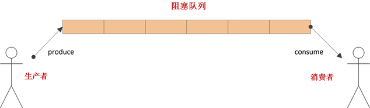
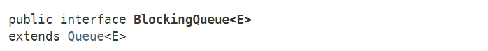

从本节开始，我们将介绍juc-collections框架中的“阻塞队列”部分。阻塞队列在实际应用中非常广泛，许多消息中间件中定义的队列，通常就是一种“阻塞队列”。
那么“阻塞队列”和我们之前讨论过的ConcurrentLinkedQueue、ConcurrentLinkedDeque有什么不同呢？
ConcurrentLinkedQueue和ConcurrentLinkedDeque是以非阻塞算法实现的高性能队列，其使用场景一般是在并发环境下，需要“队列”/“栈”这类数据结构时才会使用；而“阻塞队列”通常利用了“锁”来实现，也就是会阻塞调用线程，其使用场景一般是在“生产者-消费者”模式中，用于线程之间的数据交换或系统解耦。
在Java多线程基础（七）——Producer-Consumer模式中，我们曾简要的谈到过“生产者-消费者”这种模式。在这种模式中，“生产者”和“消费者”是相互独立的，两者之间的通信需要依靠一个队列。这个队列，其实就是本文中的“阻塞队列”。
引入“阻塞队列”的最大好处就是解耦，在软件工程中，“高内聚，低耦合”是进行模块设计的准则之一，这样“生产者”和“消费者”其实是互不影响的，将来任意一方需要升级时，可以保证系统的平滑过渡。

BlockingQueue是在JDK1.5时，随着J.U.C引入的一个接口：

BlockingQueue继承了Queue接口，提供了一些阻塞方法，主要作用如下：
既然BlockingQueue是一种队列，所以也具备队列的三种基本方法：插入、删除、读取：
| 操作类型 | 抛出异常 | 返回特殊值 | 阻塞线程 | 超时 |
|---|---|---|---|---|
| 插入 | add(e) | offer(e) | put(e) | offer(e, time, unit) |
| 删除 | remove() | poll() | take() | poll(time, unit) |
| 读取 | element() | peek() | / | / |
可以看到，对于每种基本方法，“抛出异常”和“返回特殊值”的方法定义和Queue是完全一样的。BlockingQueue只是增加了两类和阻塞相关的方法：put(e)、take()；offer(e, time, unit)、poll(time, unit)。
put(e)和take()方法会一直阻塞调用线程，直到线程被中断或队列状态可用；
offer(e, time, unit)和poll(time, unit)方法会限时阻塞调用线程，直到超时或线程被中断或队列状态可用。
public interface BlockingQueue<E> extends Queue<E> {
/**
* 插入元素e至队尾, 如果队列已满, 则阻塞调用线程直到队列有空闲空间.
*/
void put(E e) throws InterruptedException;
/**
* 插入元素e至队列, 如果队列已满, 则限时阻塞调用线程，直到队列有空闲空间或超时.
*/
boolean offer(E e, long timeout, TimeUnit unit)
throws InterruptedException;
/**
* 从队首删除元素，如果队列为空, 则阻塞调用线程直到队列中有元素.
*/
E take() throws InterruptedException;
/**
* 从队首删除元素，如果队列为空, 则限时阻塞调用线程，直到队列中有元素或超时.
*/
E poll(long timeout, TimeUnit unit) throws InterruptedException;
// ...
}
除此之外，BlockingQueue还具有以下特点：
最后，我们来看下如何利用BlockingQueue来实现生产者-消费者模式。在生产者-消费者模式中，一共有四类角色：生产者、消费者、消息队列、消息体。我们利用BlockingQueue来实现消息队列，其余部分没有什么变化。
生产者生产消息体（Data），并将消息体（Data）传递给通道（Channel）。
/**
* 生产者
*/
public class Producer implements Runnable {
private Channel channel;
public Producer(Channel channel) {
this.channel = channel;
}
@Override
public void run() {
while (true) {
String v = String.valueOf(ThreadLocalRandom.current().nextInt());
Data data = new Data(v);
try {
channel.put(data);
System.out.println(Thread.currentThread().getName() + " produce :" + data);
} catch (InterruptedException e) {
e.printStackTrace();
}
Thread.yield();
}
}
}
消费者从通道（Channel）中获取数据，进行处理。
/**
* 消费者
*/
public class Consumer implements Runnable {
private final Channel channel;
public Consumer(Channel channel) {
this.channel = channel;
}
@Override
public void run() {
while (true) {
try {
Object obj = channel.take();
System.out.println(Thread.currentThread().getName() + " consume :" + obj.toString());
} catch (InterruptedException e) {
e.printStackTrace();
}
Thread.yield();
}
}
}
相当于消息的队列，对消息进行排队，控制消息的传输。
/**
* 通道类
*/
public class Channel {
private final BlockingQueue blockingQueue;
public Channel(BlockingQueue blockingQueue) {
this.blockingQueue = blockingQueue;
}
public Object take() throws InterruptedException {
return blockingQueue.take();
}
public void put(Object o) throws InterruptedException {
blockingQueue.put(o);
}
}
Data代表了实际生产或消费的数据。
/**
* 数据/消息
*/
public class Data<T> implements Serializable {
private T data;
public Data(T data) {
this.data = data;
}
public T getData() {
return data;
}
public void setData(T data) {
this.data = data;
}
@Override
public String toString() {
return "Data{" +
"data=" + data +
'}';
}
}
调用如下：
public class Main {
public static void main(String[] args) {
BlockingQueue blockingQueue = new SomeQueueImplementation();
Channel channel = new Channel(blockingQueue);
Producer p = new Producer(channel);
Consumer c1 = new Consumer(channel);
Consumer c2 = new Consumer(channel);
new Thread(p).start();
new Thread(c1).start();
new Thread(c2).start();
}
}